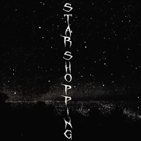

Wait right here
I'll be back in the mornin'
I know that I'm not that important to you
But to me, girl, you're so much more than gorgeous (Yeah)
So much more than perfect (Yeah)
Right now I know that I'm not really worth it
If you give me time, I could work on it
Give me some time while I work on it
Losin' your patience, and, girl, I don't blame you
The Earth's in rotation, you're waitin' for me (Yeah)
Look at my face when I fuck on your waist
'Cause we only have one conversation a week
That's why your friends always hatin' on me
Fuck 'em though, I did this all by myself
Matter fact, I ain't never asked no one for help
And that's why I don't pick up my phone when it rings
None of my exes is over Lil Peep
Nobody flexin' as much as I be
That's why she text me and tell me she love me
She know that someday I'll be over the sea
Makin' my money and smokin' my weed
I think it's funny, she open up to me, get comfortable with me
Once I got it comin', I love her, she love me
I know that I'm nothing like someone her family want me to be
If I find a way, would you walk it with me?
Look at my face while you talkin' to me
'Cause we only have one conversation a week
Can I get one conversation at least?
Shout out to everyone makin' my beats, you helpin' me preach
This music's the only thing keepin' the peace when I'm fallin' to pieces
[Chorus]
Look at the sky tonight, all of the stars have a reason
A reason to shine, a reason like mine and I'm fallin' to pieces
Look at the sky tonight, all of the stars have a reason
About
On Star Shopping, Lil Peep talks about his feelings towards his relationship with Emma Harris who is slowly starting to become impatient with him. He understands why she feels this way and is attempting to let her know how much he cares for her. He informs her that he just needs some time to get everything sorted out.
The song features Peep’s melancholy vocals over a sad, guitar-centered beat by Kryptik that samples “Never Mess With Sunday” by Yppah.
The song was unavailable on most streaming services due to a copyright issue with the sample, however on April 19, 2019, it was officially uploaded (presumably after negotiation and clearances).
The re-release of the song caused a resurgence in interest and the song’s popularity boosted. It re-entered and climbed the Genius Top 20 Hot Songs chart.
